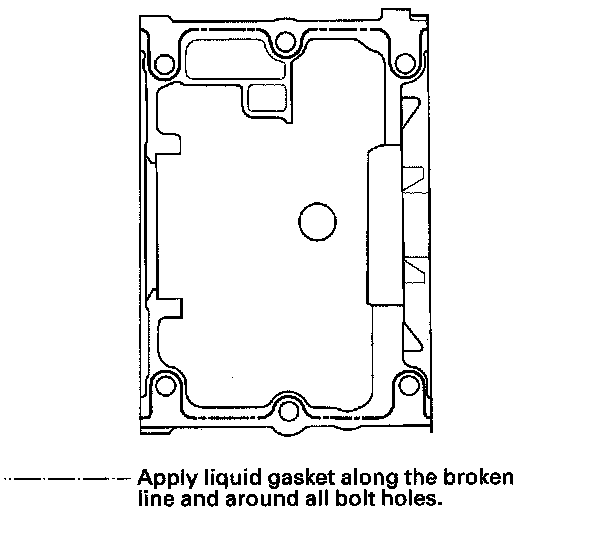
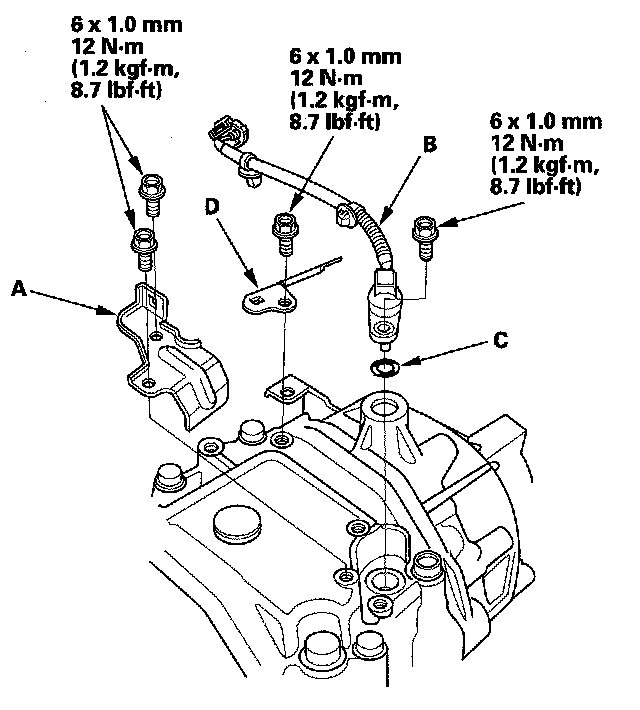

Center Case Oil Seal Replacement
Center Case Oil Seal ReplacementSpecial Tools Required
- Companion flange holder 07XAB-001A101
- Oil seal driver C 070AD-STK0130
- Fork seal driver weight 07747-0010100
1. Remove the rear differential.
2. Remove the rear differential front mounting brackets (A) from the rear differential (B).
3. Remove the differential oil temperature sensor cover (A) differential fluid temperature (B) O-ring (C) and rear differential harness bracket (D).
4. Remove the left side case (A) the right side case (B) the four 10 x 12 mm dowel pins (C).
5. Remove the mounting bolts (A) in a crisscross pattern in several steps, then remove the bearing set plate (B) and the 83 mm shim (C).
6. Remove the six mounting bolts (A) in a crisscross pattern in several steps, then remove the differential housing assembly (B) and dowel pins (C).
7. Remove the ring gear assembly (A) bearing outer races (B) 75 mm shim (C) and the 8 x 14 mm dowel pins (D).
8. Raise the locknut tab (A) from the groove of the input shaft, making sure that the tab completely clears the groove to prevent damaging the input shaft.
9. Install the companion flange holder (A) on the companion flange. Loosen the 27 mm locknut (left-hand threads).
10. Loosen the locknut (A) clockwise so that its tab (B) comes out from the groove (C) in the input shaft.
11. Tighten the locknut (A) until its tab (B) aligns with the groove (C).
12. Remove any dirt from inside of the groove in the input shaft, then loosen the locknut.
13. Remove the 27 mm locknut (A) the 27 mm spring washer (B) the 28 mm back-up ring (C) and the 28 mm O-ring (D).

14. Make a reference mark (A) across the input shaft (B) and companion flange (C) then remove the companion flange.
15. Remove the drive pinion (A) pinion spacer (B) and the thrust washer (C) by tapping on the drive pinion with a plastic hammer.
NOTE: Support it by hand not to damage the drive pinion.
16. Remove the front case oil seal (A) with a commercially available tool.
NOTE: Remove the oil seal with care so you do not damage the inside surface of the differential carrier seal surface.
17. Apply ATF to the tapered roller bearing (A) then install the new front case oil seal (B) with the oil seal driver C and fork seal driver weight (D).
18. Apply ATF to the tapered roller bearing (A) then install the drive pinion (B) pinion spacer (C) and the thrust washer (D) into the differential carrier (E).
NOTE: Be sure to install the pinion spacer in the direction shown.
19. Install the companion flange (A) on the input shaft (B) by aligning the reference mark (C).
20. Apply ATF to the new 28 mm O-ring (A) then install the new 28 mm O-ring, the 28 mm backup ring (B) the 27 mm spring washer (C) and the new 27 mm locknut (D).
21. Install the companion flange holder (A) to the companion flange, then tighten the locknut (left-hand threads).
22. Rotate the drive pinion several times to assure proper tapered roller bearing contact. Measure the drive pinion turning torque.
- If the drive pinion turning torque exceeds the standard, replace the pinion spacer.
- If the drive pinion turning torque is less than the standard, adjust by tightening the locknut a little at a time, but keep the torque within 186-353 N-m (19.0-36.0 kgf-m, 137-260 lbf-ft). If this is not possible, replace the pinion spacer.
23. Stake the locknut tab (A) into the groove in the input shaft.
24. Apply ATF to the tapered roller bearings, then Install the ring gear assembly (A) bearing outer races (B) 75 mm shim (C) and the 8 x 14 mm dowel pins (D).
25. Remove the dirt and oil from the sealing surfaces. Apply liquid gasket (P/N08718-0001) to the sealing surface. Make sure you seal the entire circumference of the bolt holes to prevent oil leakage.
NOTE:
- You must assemble the housings within do in 5 minutes after applying the liquid gasket. If not, the sealing surface must be cleaned, and the liquid gasket reapplied.
- Allow it to cure at least 30 minutes after assembly before filling the differential with fluid.
- Remove the overflowing liquid gasket, when joining side case.

26. Install the dowel pins (A) the differential housing assembly (B) and the six mounting bolts (C).
27. Tighten the six mounting bolts in a crisscross pattern in several steps.
28. Install the 83 mm shim (A) the bearing set plate (B) and the six mounting bolts (C).
NOTE: Install the bearing set plate, check to identification marks (D).
29. Tighten the six mounting bolts in a crisscross pattern in several steps.
30. Remove the dirt and oil from the sealing surfaces. Apply liquid gasket (P/N 08718-0001) to the sealing surface. Make sure you seal the entire circumference of the bolt holes to prevent oil leakage.
NOTE:
- You must assemble the housings with you do in 5 minutes after applying the liquid gasket. If not, the sealing surface must be cleaned, and the liquid gasket reapplied.
- Allow it to cure at least 30 minutes after assembly before filling the differential with fluid.
31. Install the 8 x 12 mm dowel pins (A) the rear differential right side case (B) the rear differential left side case (C) and the mounting bolts (D).
32. Tighten the mounting bolts in a crisscross pattern in several steps.
33. Install the differential fluid temperature sensor cover (A) rear differential fluid temperature sensor (B) new O-ring (C) and rear differential harness bracket (D).

34. Install the rear differential front mounting brackets (A) from the rear differential (B).
NOTE: Install a lower surface of the guide (C) horizontally as shown, then tighten the rear differential front mounting bracket bolts (D).
35. Install the rear differential.
36. Refill the differential fluid.